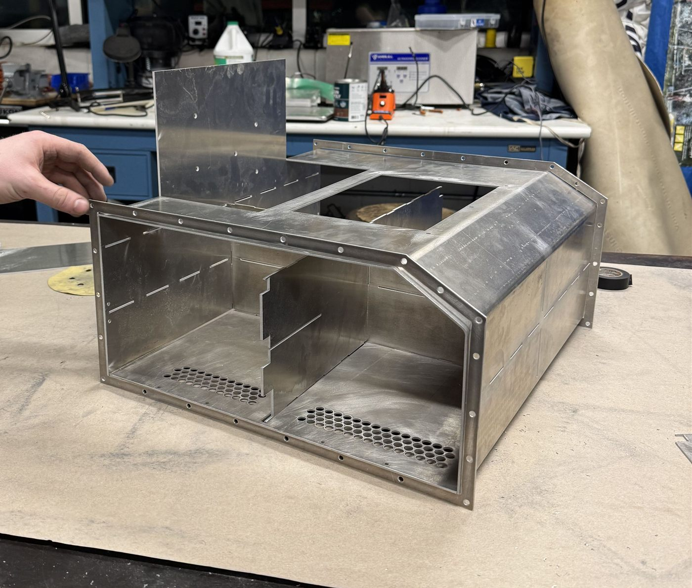
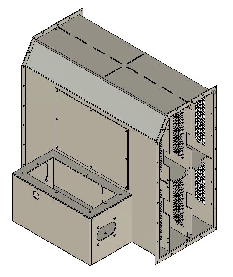
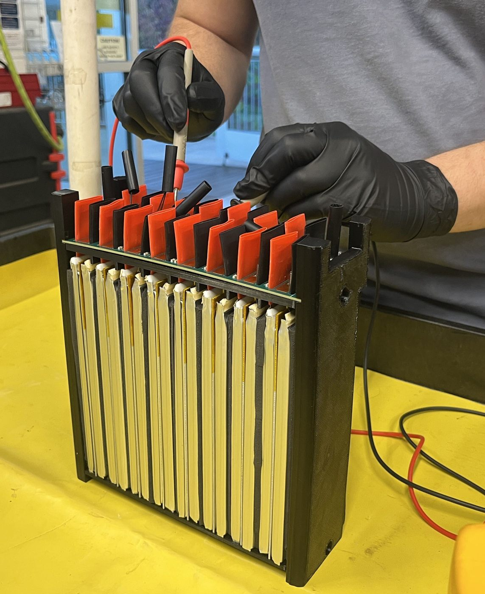
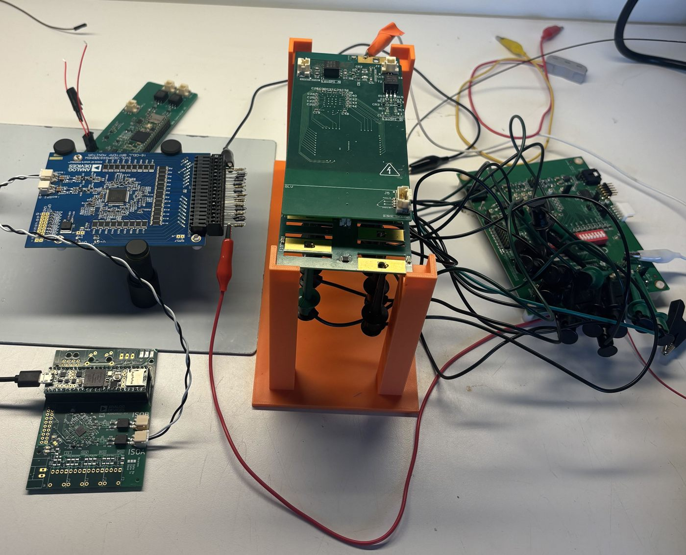

Tractive Battery
The high-voltage battery that powers the car. It is a 128S pouch-cell pack, split into eight 16S modules that stack vertically and slide out from the sides for service.
- Role
- Electrical and tractive battery subteam lead
- Tools
- Autodesk Fusion
- Cell
- SLPB9675175 pouch cell, 4.35 V max
- Configuration
- 128S pouch cells, 8 modules of 16S
- Max voltage
- 556.8 V (4.35 V per cell)
- Team
- Virginia Motorsports (UVA Formula SAE EV)

Layout
The eight modules are stacked on top of each other instead of laid out flat. Each module holds 16 SLPB9675175 pouch cells in series, and the modules are wired in series for 128S total. At 4.35 V per cell, the pack reaches 556.8 V when fully charged.

Module design
Each module uses a sandwich design. Between each pair of cells there is an aluminum heat spreader and a layer of Poron foam.
The cell tabs are folded over each other and bolted down to connect the cells in series.

Module PCB stackup
Each module has two PCBs stacked above the cell tabs:
- Cell tap board. This daughterboard sits directly under the bolted tabs and makes contact with them to read each cell's voltage. It also holds all of the module's thermistors.
- Segment mainboard. Also called the BMS motherboard, it sits above the cell tap board and handles all of the module's monitoring and control.
Right now the two boards connect through connectors. In Rev 2 we want to move to a flex PCB instead. A flex PCB holds up better to vibration than connectors and makes the module easier to assemble.

Module access
The pack has access panels on the left and right sides. Before any work, we remove both panels and pull all of the maintenance plugs. The modules then slide out horizontally.
Electronics bay
An electronics bay at the back of the pack holds the contactors, main fuse, and current sensor, keeping them separate from the cells.